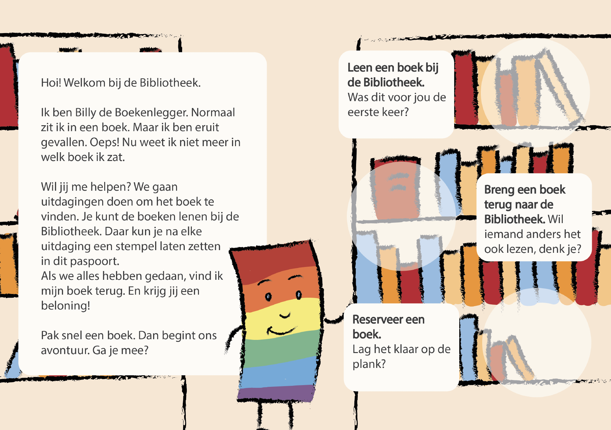
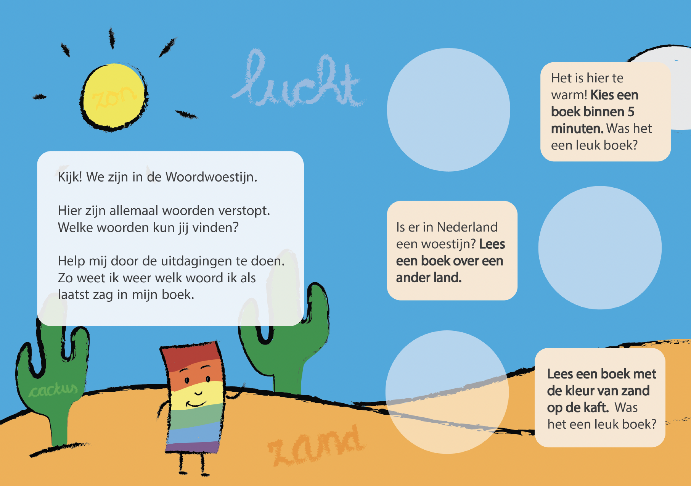
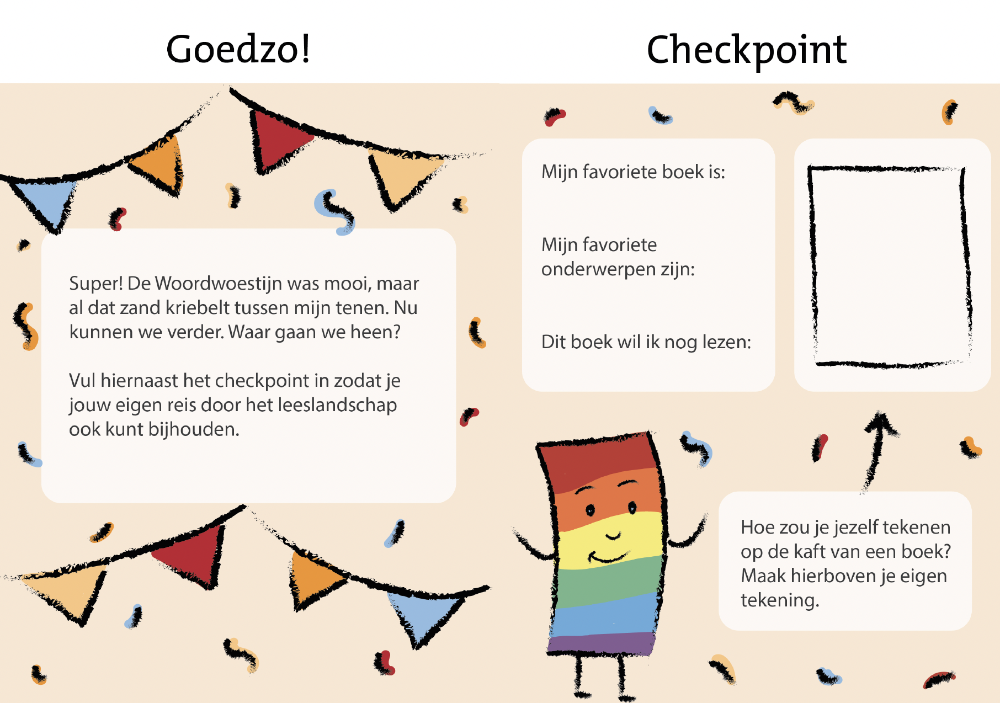
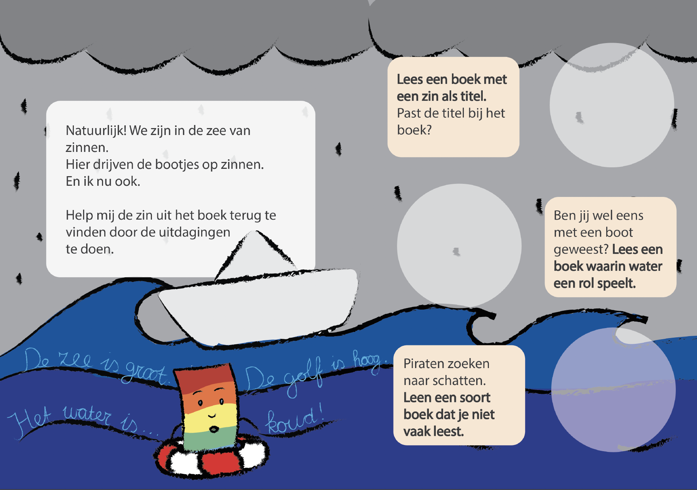
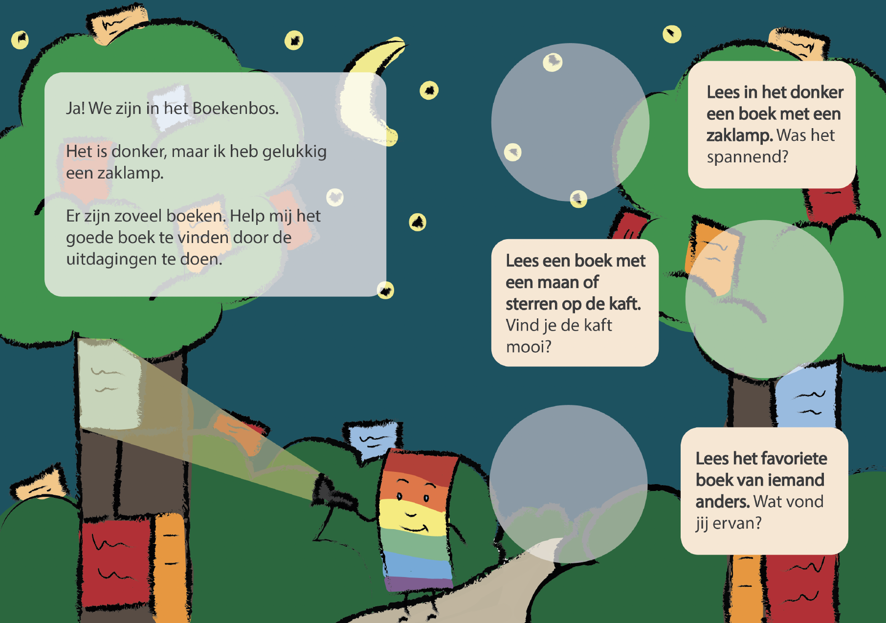
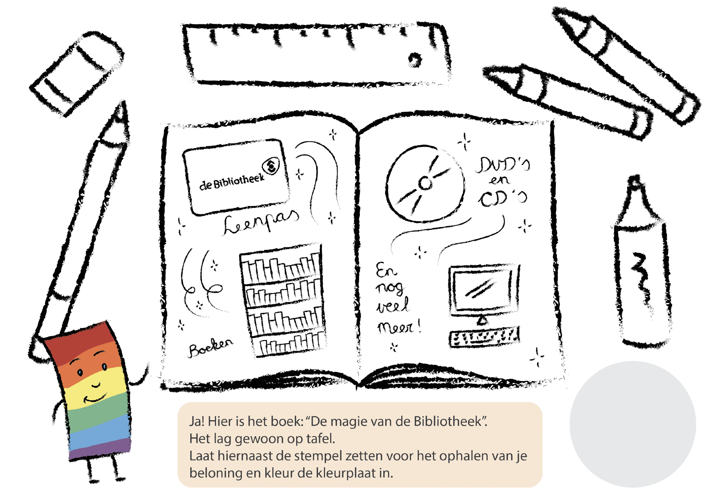
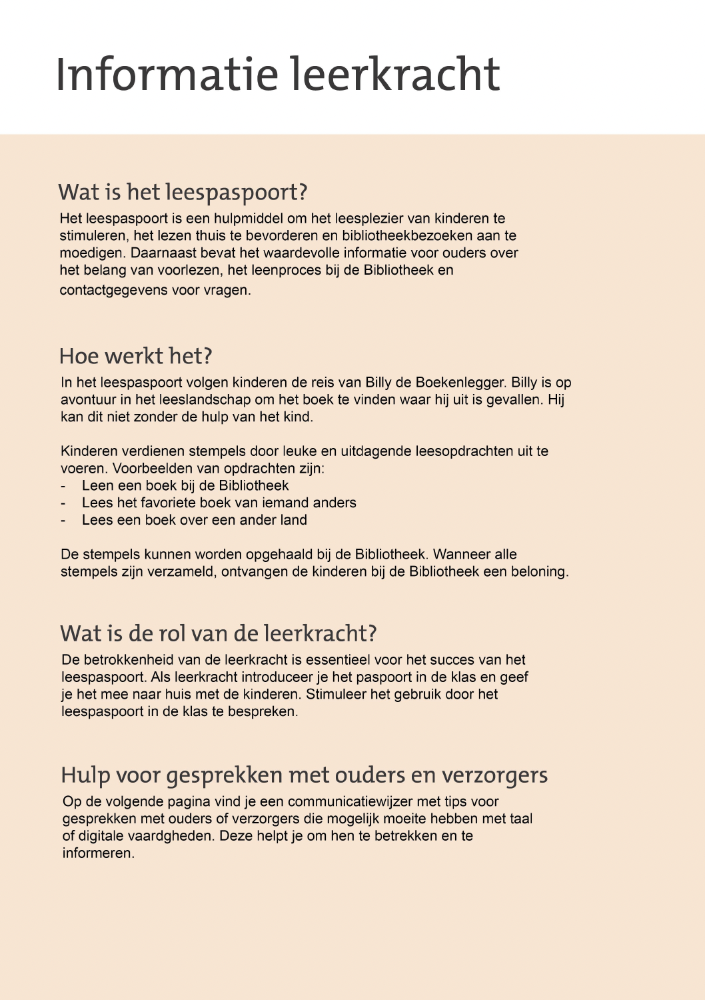
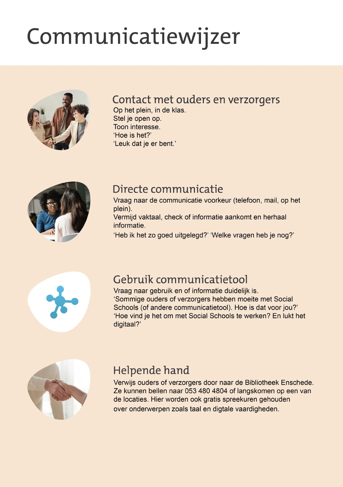

Opdracht activatie jeugdleden Bibliotheek Enschede
Als afstudeeropdracht bij Bibliotheek Enschede heb ik een leespaspoort ontwikkeld met als doel het stimuleren van niet-actieve jeugleden om gebruik te maken van hun leenpas. Dit leespaspoort volgt het verhaal van Billy de Boekenlegger die uit een boek is gevallen en die de hulp nodig heeft van het kind om het boek terug te vinden. Hiervoor gaan ze samen op reis door het leeslandschap (beginnen bij de Bibliotheek, naar de woordwoestijn, naar de zee van zinnen en naar het boekenbos). Door lees- en leenopdrachten te voltooien komt het kind verder in het verhaal en kunnen ze stempels verdienen. Wanneer het paspoort is gevuld kan het kind hiermee een beloning ophalen bij de Bibliotheek Enschede in de vorm van een boekenlegger vormgegeven als Billy, de hoofdpersoon van het verhaal. Hieronder een aantal voorbeelden van de pagina's van het leespaspoort






Het leespaspoort is ook daadwerkelijk ingzet, hieronder zie je een video van het leespaspoort in actie!"
Een groot deel van de volwassenen in Enschede is laaggeletterd, hieronder zijn dus ook ouders en verzorgers, dit speelt ook een rol in de leesbevordering van kinderen. Om deze groep ook te betrekken bij het lezen en lenen zijn er een aantal informatie pagina's achter in het leespaspoort. Deze informatie is geschreven op een taalniveau wat toegankelijk is voor laaggeletterden.


Dit leespaspoort zal via de Bibliotheek bij scholen terecht komen en zij zullen het dan meegeven aan de kinderen, hiervoor is het van belang dat leerkrachten het middel dus gemakkelijk kunnen inzetten. Uit gesprekken met leerkrachten bleek dat ze weinig tijd hebben, met als gevolg dat wanneer ze zelf zaken moeten uitzoeken het al snel blijft liggen. Daarom is er naast het leespaspoort ook een document informatie voor leerkrachten opgesteld met daarbij een communcatiewijzer die leerkrachten kan helpen op een laagdrempelige manier met (laaggeletterde) ouders en verzorgers te communiceren.

